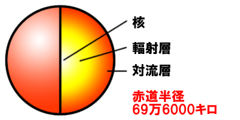
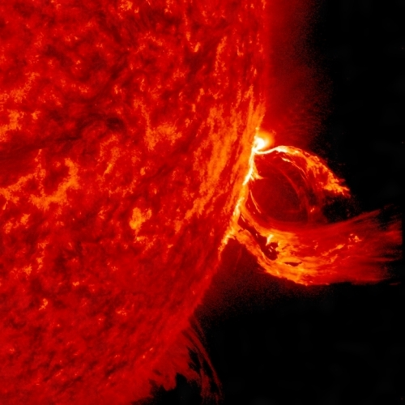
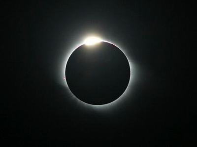

太陽の特徴
太陽は自ら光を放出する巨大な恒星である。太陽系全体の質量の99.86%を占めている。膨大な占有率で他の惑星は太陽からのエネルギーを受け取り、影響をを受け、重力によって引くつけられている。
太陽の大気はほとんど水素である。太陽の中心は、1500万℃もの高温になっている。表面の温度は中心より低いが6000℃もある。
太陽内部からのエネルギーの流れが磁場でとめられて、温度が下がった所が黒く見える。これを黒点といい、1609年にガリレオ・ガリレイによって発見された。太陽の表面のすぐ外側にある大気はという1万℃ある「彩層」がある。彩層から吹き上がるプロミネンスを観測することもできす。
太陽の日食
日食は月が太陽を覆って起こる。部分日食は、月が太陽の真上を通らないので、太陽が全て隠れず、三日月状になる日食のことである。金環日食は月から太陽が少しはみ出して細い指輪のように見える。
皆既日食は太陽が月に丁度隠れる日食である。太陽にコロナが光って見れる。日本で見れる日食は2019年1月6日になる。
赤色巨星
星の中心部で、水素が燃えた後に出るヘリウムが溜まり星が膨張、大きくなる。その後、大きくなった分温度が下がり、赤く輝いき出す。これを赤色巨星という。
太陽は50億年水素を燃やし続けて、その後ガスを放出し、赤色巨星となる。